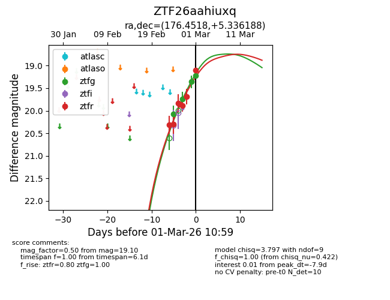
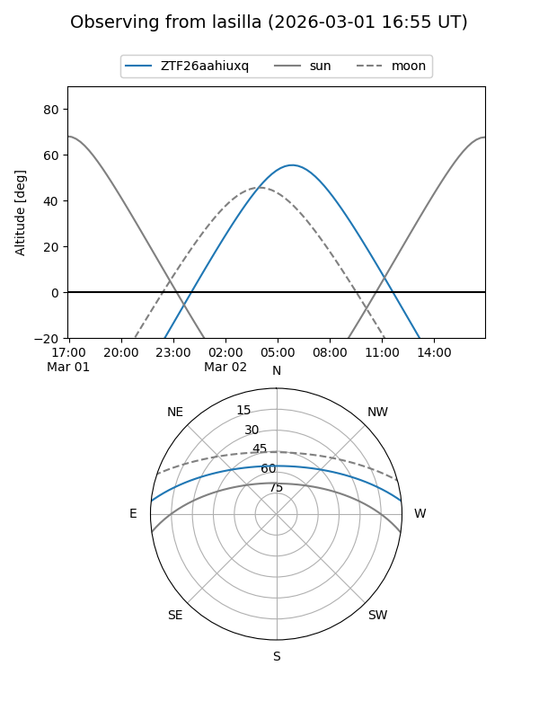
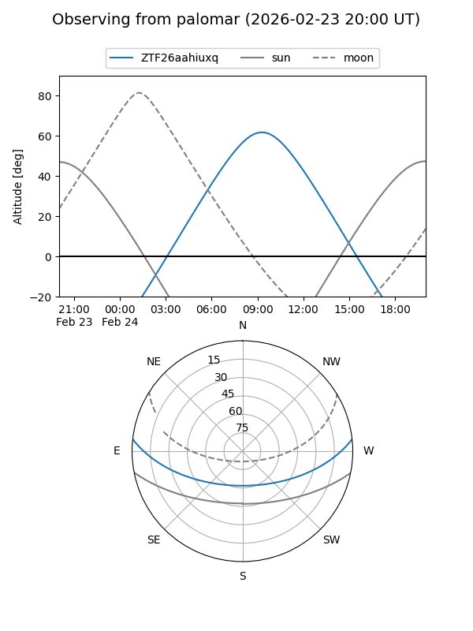
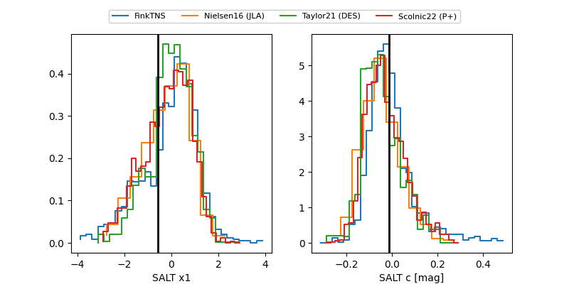

ZTF26aahiuxq
Target ZTF26aahiuxq at 2026-03-01 11:00
Aliases and brokers:
FINK: link
Lasair: link
ALeRCE: link
alt names
ZTF26aahiuxq (ztf,fink_ztf)
Coordinates:
equatorial (ra, dec) = 176.4518,+5.33619
equatorial (HMS+DMS) = 11:45:48.44,+05:20:10.28
galactic (l, b) = (264.3668,+63.18284)
Flags:
Photometry:
last ztfg=19.22, ztfr=19.10
4 ztfg, 6 ztfr detections
Lightcurve

Visibility


Additional plots
